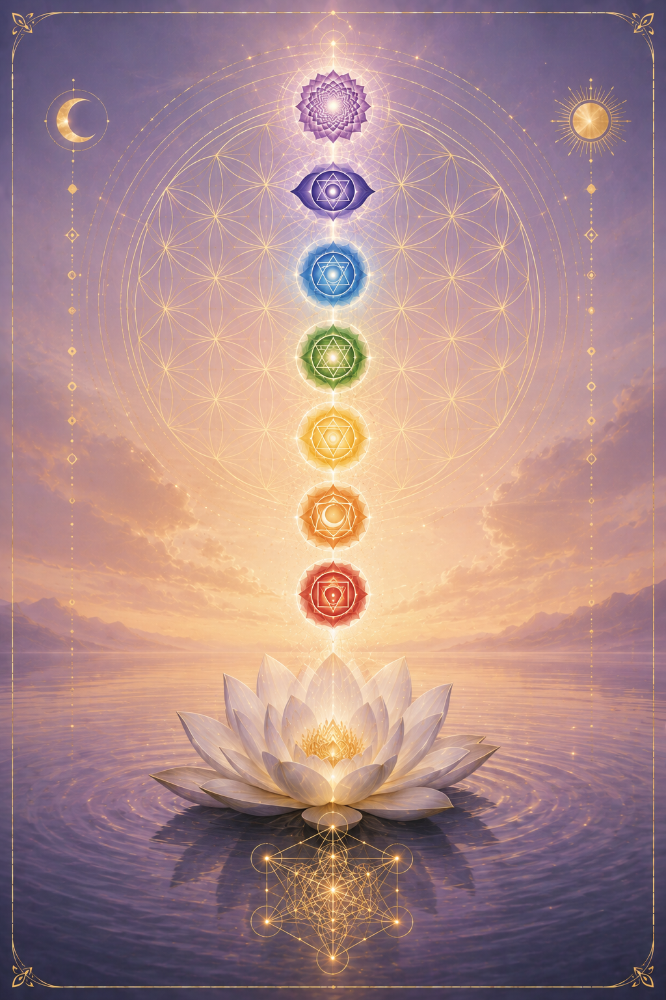
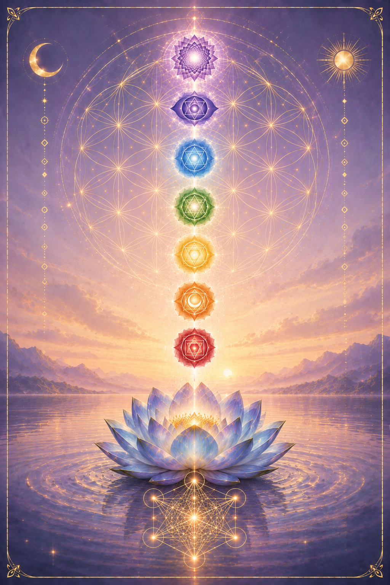

Today's Chakra Card
One card a day, drawn for you. Take a breath, set the intention to receive what you need, and pull. Let whatever comes be exactly what today is asking of you.
 ✦
✦

✦
✦Breathe, then choose the card that calls to you.
Check in with yourself
Seven honest statements, one for each center. Drag each slider to how much it sounds like you lately. The ones that make you go "oof, that's me" are showing you where your energy wants attention. Come back to this whenever you want to see where you're at, about once a week is plenty.
Move all 7 sliders to see your results.
Here's where your energy sits
Each percentage shows how open and flowing that center is right now. A higher number is what you're moving toward, it means that center is clear and doing well. A lower number isn't bad, it just means that center is asking for a little care. Think of your lowest one as the doorway to work on first.
The Root
This is your floor. Safety, belonging, and the deep body-knowing that you have enough and you are enough. When money feels scary, when you're building from survival instead of desire, the work starts here. You can't grow a magnetic business on top of a nervous system that thinks it's about to lose everything.
What lives here
Read this firstYour root is the part of you that answers one question all day long without you noticing: am I safe? When the answer is yes, you make clear decisions. You price your work without flinching. You let money come and go without gripping.
When the answer is no, everything upstream gets distorted. You undercharge because a sale today feels safer than the right client next month. You say yes to work that drains you because saying no feels like risk. The scattered offers, the inconsistent cashflow, a lot of it traces back to a root that never got to feel steady.
The good news is your body learns safety the same way it learned fear. Slowly, through repetition, through practice. That's what everything below is for.
When it's blocked
- ●Money decisions come from panic, not choice
- ●You undercharge to feel safe
- ●Constant low hum of "there won't be enough"
- ●You hoard or you overspend, never steady
When it's flowing
- ✦Money comes and goes without gripping
- ✦You price from worth, not fear
- ✦A settled "I've got me" underneath it all
- ✦You can wait for the right yes
EFT tapping script
Tap through the fear of not enoughTap lightly through each point with two fingers as you say the words out loud. Start on the karate-chop point (side of the hand) for the setup, then move through the sequence. Say it like you mean it, even the parts that feel untrue. That's the whole point.
Even though part of me is scared there won't be enough, and my body has believed that for a long time, I choose to feel my feet on the ground right now.
Body practice
Grounding breath for the nervous systemBarefoot Grounding Breath
Slow 6-count exhaleBreathe with the circle
Follow the ring. In as it grows, out as it settles.
Daily mantra
Say it in the mirror, mean it later"I am safe. I have enough, and I am enough. The ground holds me while I build."
Chakra activation
Daily spinning-light practiceThe Sacral
This is your water. Pleasure, creativity, desire, and the part of you that makes things because it wants to. When your work has gone flat and every offer feels like a chore, when you can't remember the last time creating felt good, this is the center asking for you. Money follows desire. A business built from joy has a pull that a business built from obligation never will.
What lives here
Read this firstYour sacral is where desire lives. It's the part of you that lights up at a new idea, that wants to make something just because it would feel good to make it. When it's flowing, creating is play. Offers come to you in the shower. You follow what feels alive and the work has a warmth people can feel.
When it's blocked, everything turns grey. You create from should instead of want. You copy what's working for everyone else because you've lost the thread of what actually excites you. You feel guilty resting, guilty spending, guilty enjoying any of it. And the work starts to feel like a machine you have to keep feeding.
Pleasure isn't the reward you get after the work. For this center, pleasure is the fuel. Let yourself want things again and the creativity comes back with it.
When it's blocked
- ●Creating feels like a chore, never play
- ●You've forgotten what actually lights you up
- ●Guilt around rest, pleasure, or spending
- ●You copy others because your own spark went quiet
When it's flowing
- ✦Ideas come easily and making them feels good
- ✦You create from desire, not obligation
- ✦You let yourself enjoy money and rest
- ✦Your work has a warmth people are drawn to
EFT tapping script
Tap through the guilt around wantingTap lightly through each point with two fingers as you say the words out loud. Start on the karate-chop point (side of the hand) for the setup, then move through the sequence. Say it like you mean it, even the parts that feel untrue. That's the whole point.
Even though I learned somewhere that wanting more makes me selfish, and I've been creating from should for so long I forgot what I actually want, I choose to let a little desire back in.
Body practice
Loosen the hips, let desire moveThe Flow & Want List
Movement + a 2-minute listA permission slip
Read this out loud, slowly. Let it land.
"I don't have to earn my rest or justify my pleasure. Wanting more doesn't make me greedy. It makes me alive. My desire is a compass, and I'm allowed to follow it."
Daily mantra
Say it in the mirror, mean it later"I create from desire, not obligation. Pleasure is my fuel, and I'm allowed to want more."
Chakra activation
Daily spinning-light practiceThe Solar Plexus
This is your fire. Confidence, will, and the quiet certainty that you're the one running your life. When you second-guess every decision, when you can't say your price without your voice going up at the end like a question, this is the center that needs stoking. A business runs on your ability to decide and stand behind it. That's this center's whole job.
What lives here
Read this firstYour solar plexus is your inner fire, the part of you that says I've got this and means it. When it's lit, you make a call and move. You say your price and let it sit there without rushing to soften it. You back yourself even when someone pushes back.
When it's low, you leak power everywhere. You wait for permission that's never going to come. You discount before anyone even asks. You say yes when your whole body means no, then spend the week resenting it. Every one of those is a little withdrawal from a fire that's already running low.
Confidence isn't something you're born with or without. It's built the same way a fire is, one small log at a time. Every time you keep a promise to yourself, every decision you make and stand behind, you're feeding it.
When it's blocked
- ●You second-guess decisions for days
- ●You discount before anyone asks
- ●You wait for permission to move
- ●You say yes when you mean no
When it's flowing
- ✦You decide and move without spiralling
- ✦You say your price and let it stand
- ✦You back yourself when pushed
- ✦Your no is a full sentence
EFT tapping script
Tap through the self-doubtTap lightly through each point with two fingers as you say the words out loud. Start on the karate-chop point (side of the hand) for the setup, then move through the sequence. Say it like you mean it, even the parts that feel untrue. That's the whole point.
Even though I second-guess myself constantly and wait for someone else to say it's okay, I choose to trust that I know what's right for me.
Body practice
Stoke the fire, take up spaceThe Power Pose & One Bold Call
2 minutes + one decisionA line to stand on
Say it out loud, chin level, like you mean it.
"I don't need anyone's permission to back myself. I make the call, I say the price, I stand behind it. My fire is mine to feed."
Daily mantra
Say it in the mirror, mean it later"I trust myself to decide. I say my price and let it stand. I'm the one running my life."
Chakra activation
Daily spinning-light practiceThe Heart
This is your air. Love, worth, and the ability to actually let things in. When you give and give but deflect the second someone tries to give back, when charging what you're worth feels like asking for too much, this is the center that's guarding the door. Money is just energy, and this is where you decide whether you're allowed to receive it.
What lives here
Read this firstYour heart is where receiving lives. Not just love, though that too. It's whether you can take a compliment without swatting it away. Whether you can charge your worth and let the payment land without guilt. Whether you can let people help you instead of carrying it all yourself.
When it's guarded, you become the giver who never lets anyone give back. You pour from a cup that's already empty and call it generosity. You drop your price the moment someone hesitates, because deep down a part of you isn't sure your work is worth it. Being needed feels safe. Being cared for feels exposed.
Here's what shifts it. You can't give from empty forever, and you were never meant to. Learning to receive isn't selfish. It's what keeps the whole thing flowing, so you have something real to give.
When it's blocked
- ●You deflect help, praise, and payment
- ●You give from an empty cup
- ●Charging your worth feels like too much
- ●You're hard on yourself in a way you'd never be with a friend
When it's flowing
- ✦You take a compliment with a simple thank you
- ✦You let money and support land without guilt
- ✦You believe your work is worth the price
- ✦You're as kind to yourself as to everyone else
EFT tapping script
Tap through the block to receivingTap lightly through each point with two fingers as you say the words out loud. Start on the karate-chop point (side of the hand) for the setup, then move through the sequence. Say it like you mean it, even the parts that feel untrue. That's the whole point.
Even though I'm the one who gives and never lets anyone give back, and receiving makes me want to squirm, I choose to open the door a little.
Body practice
Open the chest, practise receivingHands on Heart & The Receiving List
Breath + a short listA line to soften on
Hands on your heart, say it slowly.
"I don't have to earn my worth by giving until I'm empty. I'm allowed to receive. Letting it in is how I keep the flow going."
Daily mantra
Say it in the mirror, mean it later"My work is worth it, and so am I. I let love, money, and support land without guilt."
Chakra activation
Daily spinning-light practiceThe Throat
This is your voice. Truth, expression, and the courage to say the real thing instead of the safe thing. When you water down your message so nobody can disagree with it, when you say your price and then immediately talk it down, this is the center that's gone quiet. Your voice is how people find you. A muffled message is a muffled business.
What lives here
Read this firstYour throat is where your truth becomes sound. It's whether you say the thing you actually mean or the thing that keeps everyone comfortable. When it's open, your message has edges. People know exactly what you stand for, and the right ones lean in.
When it's tight, you blur yourself on purpose. You soften your opinion until it means nothing. You say your price and then rush to justify it, or quietly knock it down before anyone can flinch. You write posts that sound like everyone else because standing out feels dangerous. And then you wonder why nobody's really hearing you.
Being liked by everyone and being magnetic to your people are two different things. This center is where you stop trading the second for the first. Your voice was never meant to be background noise.
When it's blocked
- ●You say what people want to hear
- ●You soften your price the second you say it
- ●Your message sounds like everyone else's
- ●You replay what you wish you'd said
When it's flowing
- ✦You say the real thing, not the safe thing
- ✦You state your price and let it sit
- ✦Your message sounds unmistakably like you
- ✦The right people lean in when you speak
EFT tapping script
Tap through the fear of being seenTap lightly through each point with two fingers as you say the words out loud. Start on the karate-chop point (side of the hand) for the setup, then move through the sequence. Say it like you mean it, even the parts that feel untrue. That's the whole point.
Even though I water myself down so nobody can push back, and saying the real thing feels risky, I choose to let my true voice come through.
Body practice
Open the throat, find your voiceHum, Loosen & Say One True Thing
Sound + one honest sentenceA line to speak
Say it out loud, let your throat open.
"I don't have to shrink my voice to be liked. I say the real thing. My message is allowed to have edges, and the right people lean in."
Daily mantra
Say it in the mirror, mean it later"I say the real thing, not the safe thing. My voice matters, and the right people lean in."
Chakra activation
Daily spinning-light practiceThe Third Eye
This is your inner sight. Intuition, vision, and the quiet knowing that tells you which way to go before the logic catches up. When you feel a clear nudge and then talk yourself out of it, when you keep asking everyone else what to do while your own answer sits right there, this is the center that's been drowned out. Your intuition is the best strategist you have. This is where you start trusting it again.
What lives here
Read this firstYour third eye is where you see beyond the obvious. It's the hunch that turns out right, the idea that arrives fully formed, the sense that a decision is off before you can explain why. When it's open, you trust what you see. You make moves other people can't quite justify, and they work.
When it's clouded, you go numb to your own knowing. You collect opinions instead of decisions. You research and research because trusting your gut feels reckless. The nudge comes, clear as day, and you override it with logic and then watch it turn out exactly the way your gut said it would. All that noise, and the answer was in you the whole time.
Intuition isn't the opposite of strategy. It's the fastest strategy you have, once you stop talking over it. This center clears the fog so you can hear yourself again.
When it's blocked
- ●You feel the nudge and override it
- ●You collect opinions instead of deciding
- ●Everything feels foggy and unclear
- ●You research endlessly to avoid trusting yourself
When it's flowing
- ✦You trust the hunch and act on it
- ✦You can see where you're headed clearly
- ✦Ideas arrive fully formed
- ✦You know the answer before the logic catches up
EFT tapping script
Tap through the doubt in your knowingTap lightly through each point with two fingers as you say the words out loud. Start on the karate-chop point (side of the hand) for the setup, then move through the sequence. Say it like you mean it, even the parts that feel untrue. That's the whole point.
Even though I feel the nudge and talk myself out of it every time, and trusting my gut feels reckless, I choose to start listening to what I already know.
Body practice
Clear the fog, hear yourselfSoften the Brow & Ask the Question
Stillness + one honest answerA line to settle on
Eyes closed, say it slowly.
"I don't need one more opinion. I already know. I trust the quiet answer that comes before the doubt, and I let it lead me."
Daily mantra
Say it in the mirror, mean it later"I trust what I see. My intuition leads me well, and I act on the answer I already know."
Chakra activation
Daily spinning-light practiceThe Crown
This is your connection. Trust, surrender, and the felt sense that something bigger is holding you and your work. When you're gripping every outcome, when you've forgotten how to let things unfold instead of forcing them, this is the center that's closed off. The most magnetic version of your business runs on trust, not grip. This is where you learn to let go and let it come.
What lives here
Read this firstYour crown is where you plug back into something larger than your to-do list. It's the trust that things are working out even when you can't yet see how. When it's open, you hold your goals with an open hand. You do your part and let the rest come. There's an ease to you that people can feel, and it's the most magnetic thing about you.
When it's closed, you carry the whole weight yourself. You grip every outcome, force every result, and treat rest like a threat. You believe that if you just push hard enough, worry long enough, control tightly enough, you can make it all happen. And it leaves you exhausted, because you were never meant to do it alone or force what's meant to flow.
Surrender isn't giving up. It's doing your part fully, then trusting enough to stop gripping the outcome so hard. This center is where the striving finally gets to rest.
When it's blocked
- ●You grip every outcome tightly
- ●You force instead of letting things flow
- ●Rest feels like a threat
- ●You feel like you're doing it all alone
When it's flowing
- ✦You hold your goals with an open hand
- ✦You do your part and trust the rest
- ✦There's an ease people can feel
- ✦You feel held by something bigger
EFT tapping script
Tap through the need to controlTap lightly through each point with two fingers as you say the words out loud. Start on the karate-chop point (side of the hand) for the setup, then move through the sequence. Say it like you mean it, even the parts that feel untrue. That's the whole point.
Even though I hold on so tight to every outcome and believe it all falls apart if I let go, I choose to trust that I'm held and to loosen my grip a little.
Body practice
Open the crown, let goPalms Up & The Letting-Go Breath
Open posture + a releaseA line to surrender on
Palms up, say it slowly.
"I don't have to force it or carry it alone. I do my part and trust the rest. I'm held by something bigger, and I let it come."
Daily mantra
Say it in the mirror, mean it later"I do my part and trust the rest. I'm held by something bigger, and I let it come."